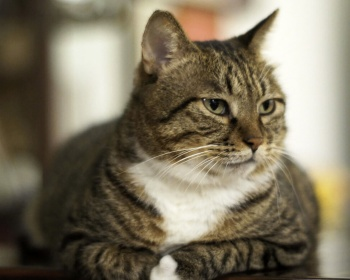

|  | Несмотря на то, что порода считается бесхвостой, хвост все же имеется, и он редко бывает одинаковой длины. Купить эту породу кошек в родной стране достаточно просто, а вот в Украине - сложнее. Это крупные кошки с массой вариаций оттенков, американский бобтейл черный, кремовый с белым или трехцветный, встречаются одинаково часто. У них пропорциональная голова с ушами средних размеров, конечности средней длины. Если вы хотите сделать себе и детям прекрасный подарок на долгие годы - это одна из лучших семейных пород. Средняя продолжительность жизни 15 лет. |